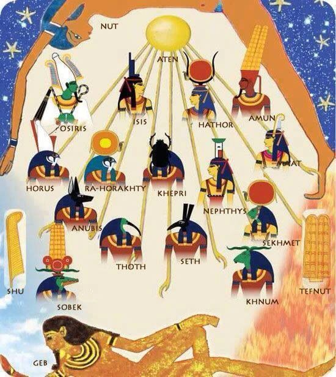
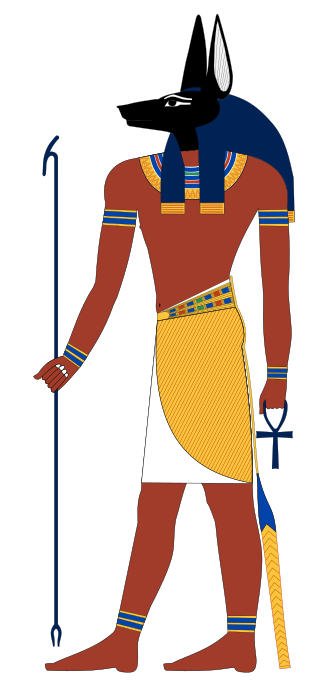
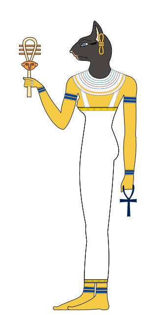
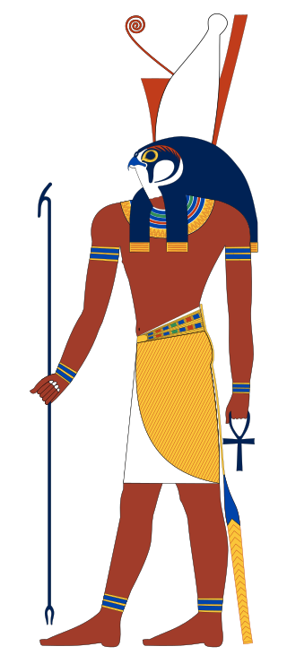
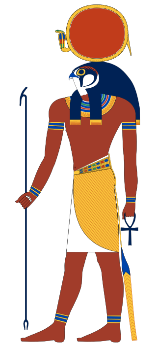

Боги Египта.
Египетские боги — первобытные божественные силы, которым поклонялись древние египтяне. Как и люди, они созданные субъекты, но более сильные. Они служат мостом между природным миром и миром людей. Через какое-то время, египтяне перестали поклоняться богам, и хоть они и продолжали молиться им и использовать их силы, маги учились сражаться с богами при надобности.
рис.1: пантеон египетских богов
Наиболее почитаемые и известные Боги Древнего Египта:
Анубис.
Анубис представлялся вобразе шакала. С определённого периода развития религии Древнего Египта Анубиса стали изображать в виде человека сголовой дикой собаки Саб или человека сголовой шакала или собаки. Апулей упоминает одвух ликах Анубиса один чёрный, как ночь, другой золотой, как день.
рис. 2: Анубис
Функции
- Древнеегипетский бог погребальных ритуалов и мумификации
- «страж весов» на суде Осириса в царстве мёртвых
- знаток целебных трав
Более подробно ознакомиться с Богом Анубисом, вы можете пройдя по ссылке
Бастет (Баст)
Древнеегипетская богиня радости, веселья и любви, женской красоты, плодородия, домашнего очага и кошек, которая изображалась в виде кошки или женщины с головой кошки. В период ранних династий, до одомашнивания кошки, её изображали в виде львицы
рис 3: богиня Бастет
Функции:
- радость, веселье, любовь
- женское здоровье и благополучные роды
- покровительница кошек
Более подробно ознакомиться с богиней Бастет, Вы можете пройдя по ссылке
Гор
Бог неба и солнца в облике сокола; человека с головой сокола или крылатого солнца.
рис 4: Гор
Функции:
- покровитель власти фараона
- бог неба
- бог царственности и солнца
Более подробно ознакомиться с богом Гором, Вы можете пройдя по ссылке
Осирис
Осирис считался владыкой загробного мира и богом плодородия. Изображался Осирис как человек с зеленой кожей (по некоторым сказаниям с черной) и длинной фараоновской бородкой, его ноги и грудь были обернуты льняными полотнами, подобно мумии, в руках он держал атрибуты власти (цеп и посох), на голове бог носил примечательную высокую корону с двумя страусиными перьями по бокам.
Осирис – один из великих божеств гелиопольской энеады, сын бога Геба и богини Нут, брат Исиды, Сэта и Нефтиды. Исида, кроме того, была его верной супругой, которая после его смерти зачала и родила от него сына Гора.
рис. 5: Осирис
Функции
- бог возрождения
- царь загробного мира
- судья душ усопших
Более подробно ознакомиться с богом Осирисом, Вы можете пройдя по ссылке
Ра
Культ бога Ра появился в городе Гелиополисе, а потом распространился на весь Древний Египет и в зависимости от региона или периода в истории принимал различные формы, связывающие бога Ра с другими популярными богами.Бог солнца Ра изображался в различных образах, но самым популярным в египетской мифологии это изображение, как статного человека с головой сокола, который носил солнечный диск на голове, часто окруженный двумя кобрами. Иногда вместо змей диск защищали человеческие руки.
рис.6: Ра
Функции
- Верховный бог Древнего Египта
- Борец с силами тьмы
- Создатель мира
Более подробно ознакомиться с богом Осирисом, Вы можете пройдя по ссылке